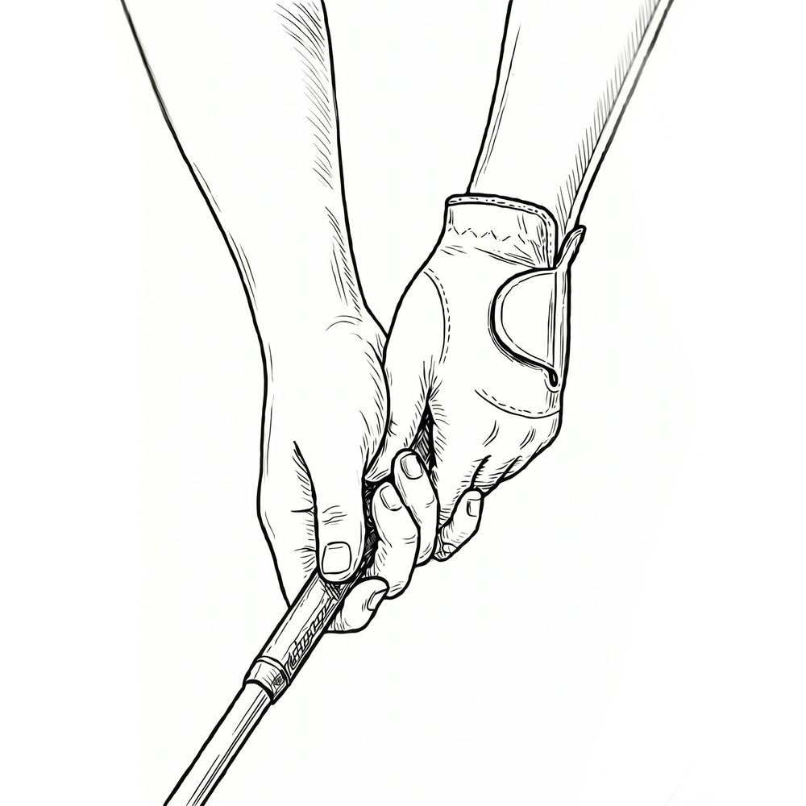
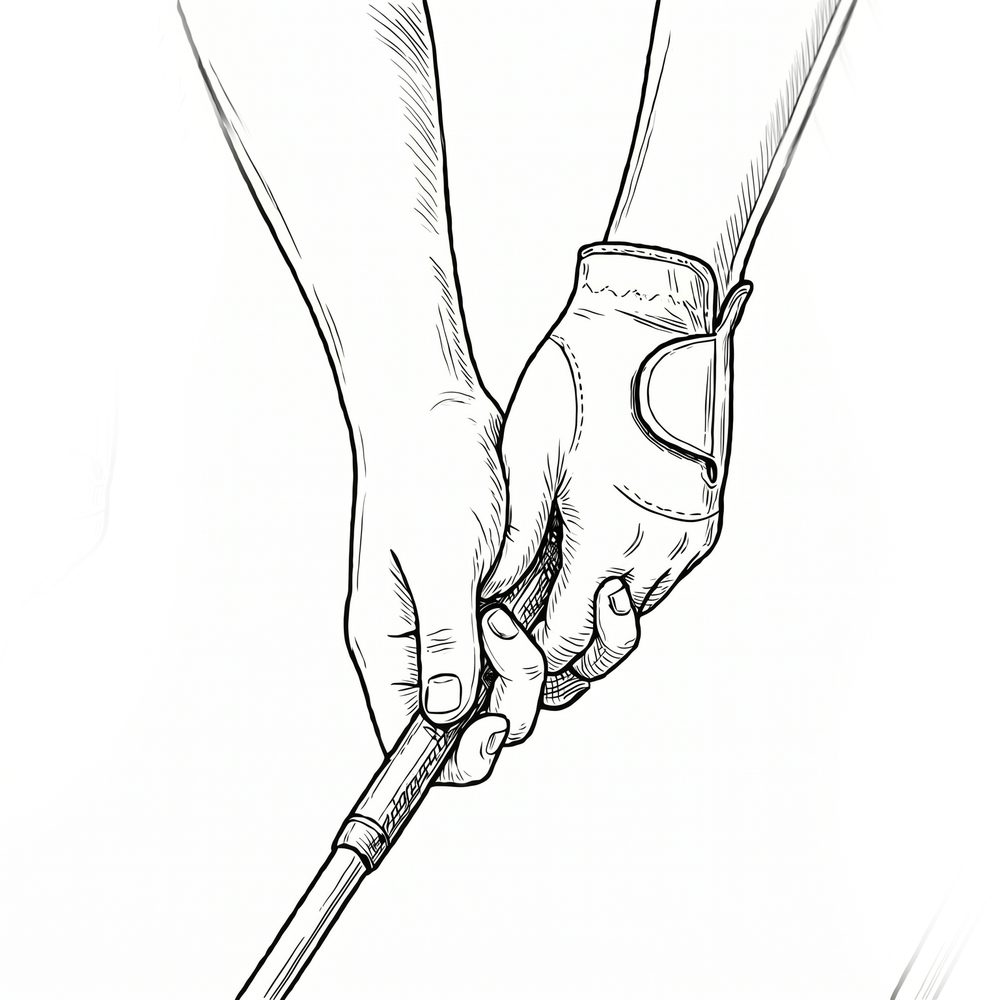
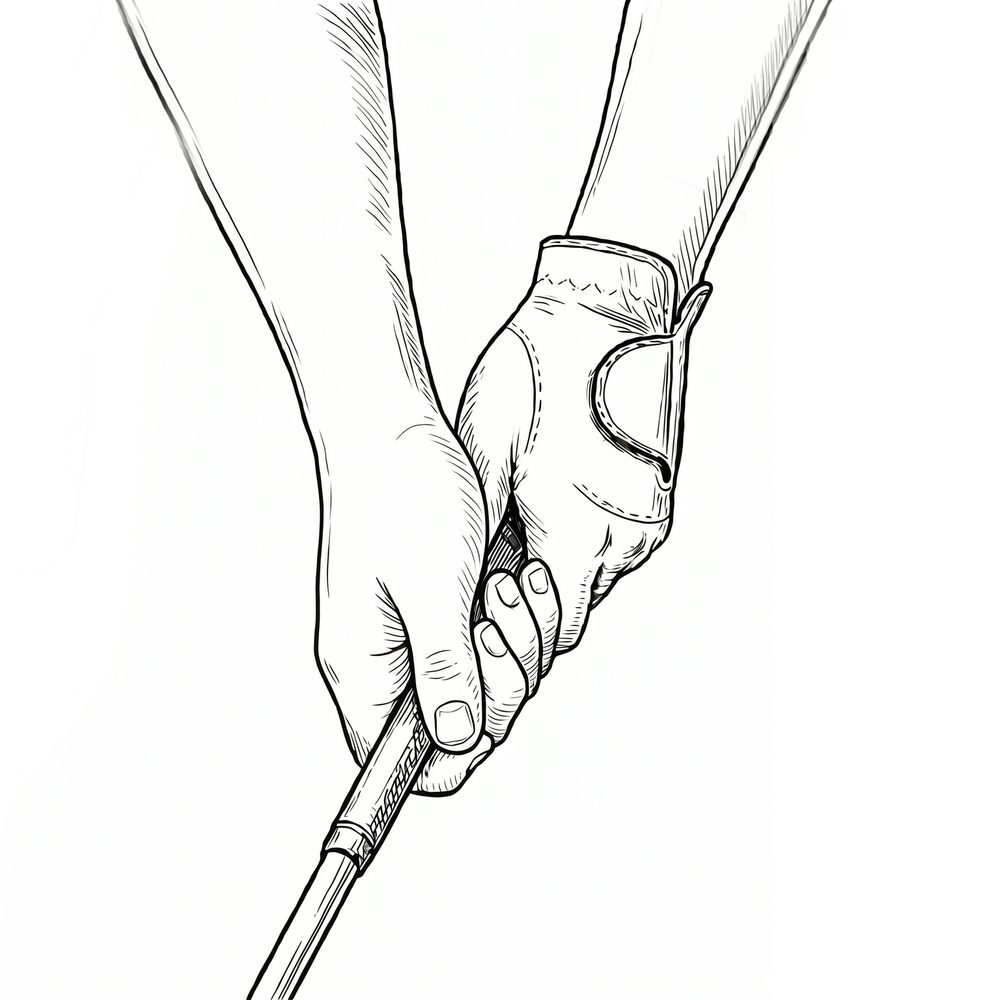
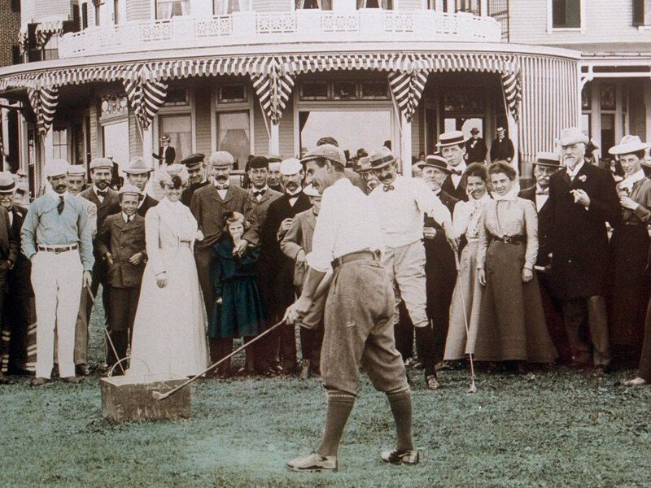

골프를 처음 배우러 가면 코치가 가장 먼저 잡아주는 것이 있습니다. 멋진 스윙도, 호쾌한 드라이버 샷도 아닙니다. 바로 클럽을 쥐는 법, 그립입니다. 전설적인 골퍼 보비 존스는 이렇게 말했습니다. "올바른 그립은 골프 스윙의 첫 번째 필수 조건이다."
왜 그토록 그립을 강조할까요
클럽과 우리 몸이 만나는 유일한 접점이 바로 손이기 때문입니다. 아무리 스윙이 좋아도 그립이 틀어져 있으면, 임팩트의 그 찰나에 클럽 페이스가 엉뚱한 방향을 향하고 맙니다. 우리를 괴롭히는 슬라이스와 훅의 상당수가 사실은 그립에서 비롯됩니다.
그립은 크게 두 가지를 결정합니다. 양손이 하나처럼 움직이느냐, 그리고 클럽 페이스의 방향입니다. 그렇다면 그립에는 어떤 종류가 있을까요. 크게 세 가지입니다.
첫째, 오버래핑 그립

가장 널리 쓰이는 그립으로, 프로 투어 선수의 약 90%가 사용합니다. 오른손 새끼손가락을 왼손 검지 위에 살짝 포개어 얹는 방식이죠. 또 다른 이름은 '바든 그립' — 디 오픈을 여섯 번 제패한 골프 역사상 최초의 국제적 스타, 해리 바든의 이름에서 따왔습니다.
흥미로운 사실 하나. 정작 이 그립을 처음 쓴 사람은 바든이 아니라 조니 레이들레이라는 아마추어였습니다. 다만 바든이 워낙 유명했던 탓에 그의 이름이 영원히 새겨진 것이죠. 이후 샘 스니드, 아놀드 파머, 필 미컬슨이 이 그립을 애용했습니다.
둘째, 인터로킹 그립

오른손 새끼손가락과 왼손 검지를 깍지 끼듯 거는 방식으로, 결속이 가장 강합니다. 잭 니클라우스, 타이거 우즈, 로리 매킬로이 — 이 세 사람의 메이저 우승 합계만 37개에 달합니다.
작은 일화. 우즈는 평생 수백만 개의 공을 이 그립으로 쳐온 탓에 오른손 새끼손가락이 실제로 살짝 휘었다고 합니다. 손가락이 짧거나 전완근 힘이 약한 골퍼에게 특히 유리합니다.
셋째, 텐 핑거 그립

열 손가락을 모두 클럽에 얹는 방식으로, 야구 배트를 쥐듯 잡아 '베이스볼 그립'이라고도 합니다. 가장 단순해 입문자·어린이·손이 작은 골퍼에게 권할 만합니다. 다만 양손이 따로 움직이기 쉬워 정밀도는 다소 떨어질 수 있습니다.
그립에도 '방향'이 있습니다
흔히 스트롱·뉴트럴·위크로 나뉩니다. 여기서 '스트롱'은 힘을 세게 준다는 뜻이 아니라, 손을 클럽 위에서 얼마나 돌려 잡느냐를 가리킵니다. 스트롱은 거리가 늘지만 훅이 나기 쉽고, 위크는 슬라이스 성향을 띱니다.
마치며

결국 정답인 그립은 없습니다. 손의 크기, 악력, 스윙 스타일에 따라 저마다 맞는 그립이 다릅니다. 다만 한 가지 원칙은 분명합니다. 한 번 정한 그립은 자주 바꾸지 않는 것이 좋다는 것입니다.
입문자라면 편안한 베이스볼 그립으로 시작해, 익숙해진 뒤 오버래핑이나 인터로킹으로 넘어가는 것을 권합니다.